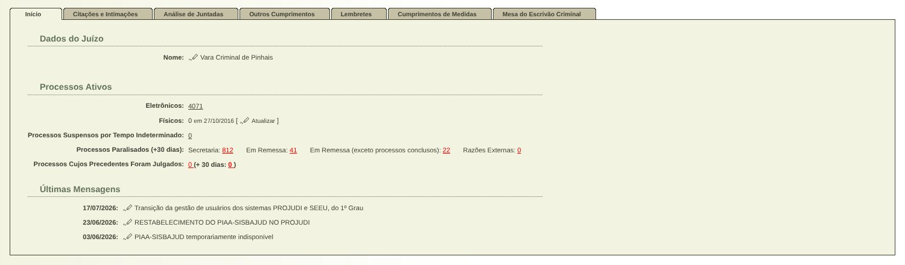
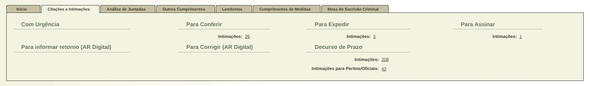
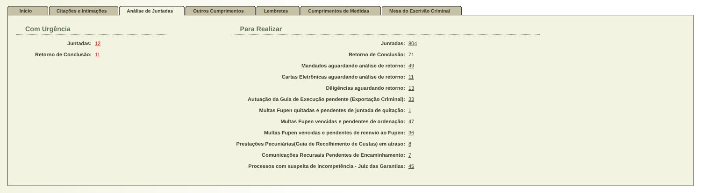
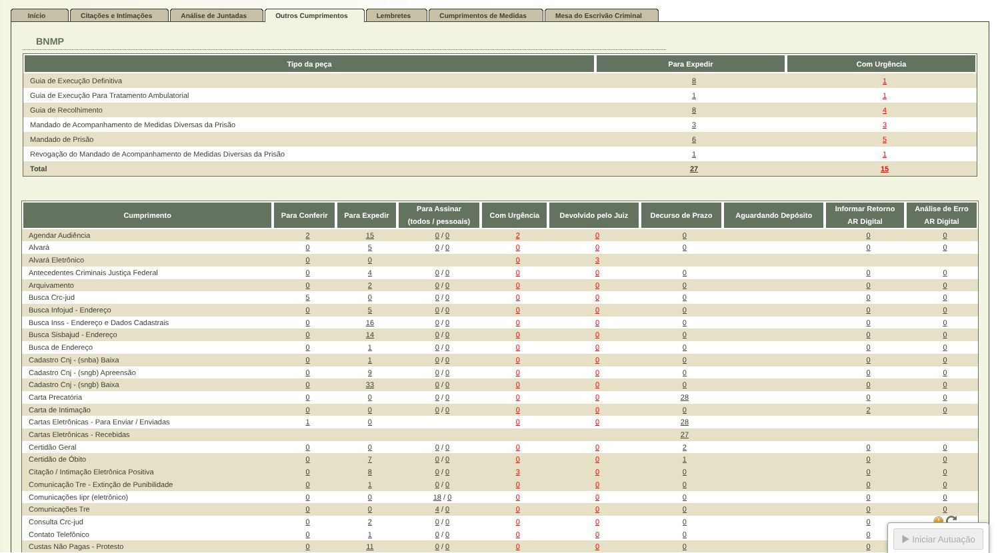
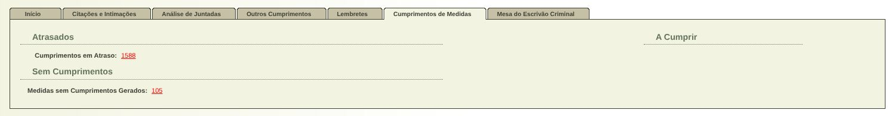
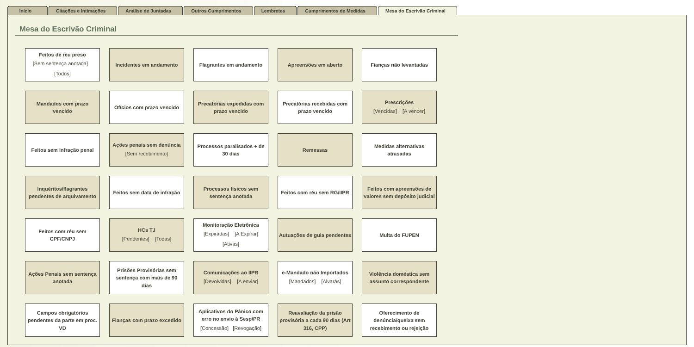

As mesmas abas, os mesmos números e os mesmos links do Projudi, organizados em blocos fáceis de ler. Clique nas abas da tela abaixo e use Antes / Proposta para comparar com a tela atual.



| Tipo da peça | Para Expedir | Com Urgência |
|---|
| Cumprimento | Andamento | Atenção | Prazos | AR Digital | |||||
|---|---|---|---|---|---|---|---|---|---|
| Para Conferir | Para Expedir | Para Assinar todos / pessoais | Com Urgência | Devolvido pelo Juiz | Decurso de Prazo | Aguardando Depósito | Informar Retorno | Análise de Erro | |


A aba Lembretes continua com o visual atual, como você pediu.
